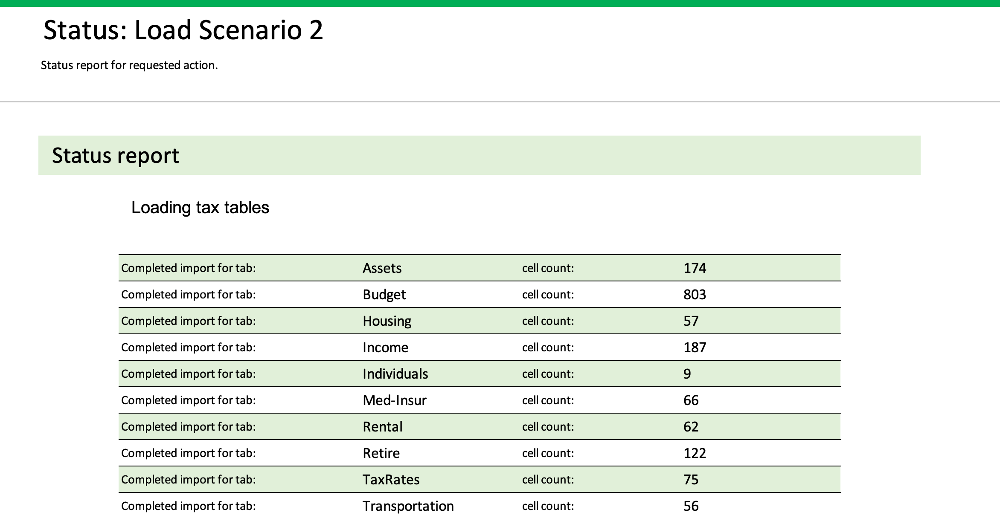
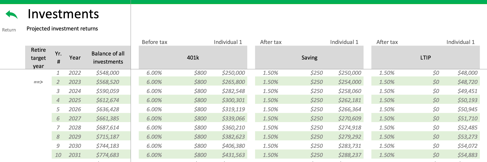

User Interface
Common UI Icons
Through out the tabs of this application are series of icons that are intended to assist in using the software.
| Icon | Name | Description |
|---|---|---|
| Down chevron | Decrease the associated value. | |
| Down chevron | Increase the associated value. | |
| Eyeball | Toggle view/hide associated data. | |
| Green gears | Toggle view/hide the detailed retirement plan information. | |
| Green calculator | Invoke the create retirement plan process. | |
| Home | Navigate to the Home tab. | |
| Lock | Toggle the lock/unlock of the tab to enable editing of the tab. | |
| Calculators | Navigate to the calculators tab. | |
| Notes | Navigate to the Notes tab. | |
| Pencil | Navigate to the associated tab to view, enter, or update data. | |
| Report | Navigate to the associated report tab. | |
| Home | Return to the previous tab. | |
| Home | Navigate to the Home tab. |
Tabs
Once Retirement Planner is opened a default set of tabs are shown. Other optional tabs are shown when a specifc function is selected or performed. The optional tab will be closed when the navigation return arrow is used. If the navigation return arrow is not used the tab will remain open. When Retirement Planner software is stopped and re-started all optional tabs will be closed.
Select from the two categories below to view the list of associated tabs. Clicking the tab name will navigate to additional information regarding the tab.
Default tabs
Assets
Provides the ability to define twelve Investments accounts, five cash accounts, one housing, four vehicles, and two rental properties. The twelve investments must to be classified as either Before or After tax monies. If defined as Before tax the owning individual must also be defined.
Info
Housing, Vehicles, and Rental topics have icons that allow further editing. The Investments topic also has an icon that can be used to view detailed information for each investment.
Budget
Enter budget data for multiple categories with detailed itemized entries. Each detailed budget item can indicate frequency, dollar amount, whether impacted by inflation, and whether the budget item is required or optional.
For Housing, Medical Insurance, and Transportation categories the pencil icon enables entry of budget information for the category. Access these category tabs by pressing the Pencil icon to the left of the associated section title.
The eyeball icon in the upper portion is used to toggle the viewing of three columns of information. These columns are:
- (+/-) Monthly Adjust at Retirement - A positive or negative dollar amount to adjust the line item at retirement.
- Projected Retirement Monthly $ - The monthly amount for this line item at retirement.
- Projected Retirement Annual $ - The annual amount for this line item at retirement.
A red text message in the upper portion of the screen will be dispalyed if any line item has a value in the column (+/-) Monthly Adjust at Retirement. The following displayed message is informational only.

Home
Provides a collection of graphs and a single report to help in understanding the generated plan. Navigatio to other tabs using the left-hand navigation buttons is also provided from this tab.
Informational and warning messages are also shown in the upper region of the screen. Note that when the message ""Press calculator to update financials"" with red background is displayed you must press the green calculator to ensure accurate financial information is shown.
When the message ""Financial information has changed, the chart or report should be generated again."" with yellow background is displayed you should re-select the shown graph or report to generate an updated view. The name of the current graph or report is shown in the upper right corner of the screen.
Included graphs and report are:
Lifetime Investments & Assets-
A stacked bar chart for each associated item from the current year to age 100 of the youngest of the individuals defined on the Individual tab.
30 Year Financial-
A line chart that is based on the defined start retirement year as the first year.
30 Year Income-
A stacked bar chart of all income types defined on the Income tab. Starts with current year.
Budget Current & Future-
This graph is either two or three pie charts. Only two pie charts will be shown if retirement has already started. If yet to start retirement a third pie chart will be shown that has the estimated budget at start year of retirement.
30 Year Budget Trend-
A combination of line and bar charts. These charts start with the retirement year if in the future of current year is already started retirement.
30 Year Home & Rentals-
A line chart with home and if defined, rentals. This chart starting with current year.
Checklist Report-
Produces one or more line items with the results of rules that that check logic relationships and values entered.
The user may also modify the Average Rate of Return, Inflation Rate, and Retirement Start Year using the green up chevrons or the red down chevrons.
Income
Define estimated or actual incomes that are currently being received or expected to be received during retirement. Monthly dollar amounts, start date, end date, COLA (Cost of Living Adjustment), and percent taxable can be defined as applicable. Incomes can include Social Security, Railroad Retirement, Government, Teacher pension, qualified pensions, annuities, rental, employment, and one time annual supplementals.
Info
Consider using the Social Security Estimator to help determine what amounts may be appropriate to enter for Social Security.
Individuals
Enter data for one or two individuals. The data consists of name, date of birth, hopeful retirement date, a target retirement year, and tax filing status and state. The year entered in the Date of birth will be used to calculate the individuals age in a specific year. The Retirement Planning Year will be used as the start year for calculations regarding data for retirement. Once the tax status and state are selected be sure to press the button Update tax tables.
Info
The hopeful retirement date is only used to calculate the values shown on this tab for the fields months and days till retirement.

A warning message will be shown if the selected tax status and state do not match the tables loaded for calculations.

Press the Update tax tables button to update the tax tables and remove the warning message.
Overview
Information regarding how to interact, learn, and upgrade Retirement Planner.
Retire
Create the retirement plan, an overview spanning forty years. The plan is provided with Investment balances, withdrawal amounts, budget, and budget adjustments.
The withdrawal amount is either the amount needed to meet budget requirements or that plus any additional amount must be withdrawn to meet the IRS Required Minimum Deduction (RMD).
Toggle the eyeball icon and/or green gears icon to view or suppress addditional detail financial data. Scroll to the right for the additional detail information.
The following messages and and popups can occur on the Retire tab:

If there are insufficent funds in the investments to span the forty years a message will be displayed to indicate the calculations ahve been stopped.

Income monies for one or more years exceed the budget needs resulting in a negative withdrawl amount.

The green calculator icon/button needs to be pressed to update all financials and invoke the create plan process. This message will be cleared once processing is completed.

Current row of the plan that is being processed. If all rows are successfully processed the message will be cleared from the screen.
Useful Info
Reports and Calculators are provided to aid in understanding factors related to creating a robust retirement plan.
Welcome
General information regarding the Retirement Planning software.
Optional tabs
COLACPI
Provides Social Secuirty Cost of Living Adjustment (COLA) and Consumer Price Index (CPI) information.
The data in the CPI table is also used to calculate the average inflation rate for the last ten years. The calculated value is then used to determine if the defined inflation rate for the retirement is more than one percent more or less. If the defined inflation rate is more or less than one percent difference this difference is reported when creating the Checklist Report from the Home tab.
These tables can be updated by the user. Use of the lock in the upper portion of the screen to allow editing.
This tab is accessed from Useful Info tab.
Calculators
Multiple calculators for use in understanding the following:
1) Present value
2) Future value
3) Mortgage Payment
4) Vehicle Payment
5) Investment Fee Impact
6) Rate of Return (Overall & Annual)
This tab is accessed from Useful Info tab.
EData
A tab used to aid with importing or exporting data for this software. The data in this tab has been obtained from user entered data in this spread sheet, "Retirement Planner". The data can be imported to a newer version of "Retirement Planner". Copy the data in rows 5 to the last row containing data. Open the newest version of "Retirement Planner", select "Welcome", scroll to the bottom of the tab and press the button "Open EData". Remove the existing data if any, and paste the copied data into the spreadsheet. Close the EData tab in the latest version of "Retirement Planner" by pressing the return arrow. Once closed you should be in the "Welcome" tab again, press the "Import Data" button. It will take several seconds to multiple minutes import the data.
This tab is accessed from the Overview tab.
Housing
Enter your housing related information in this tab. Expenses for housing are entered in the top portion of this tab. The expense data is copied to the HOUSING section of the Budget tab as read only data.
If you own a home be sure enter the related information. If you plan to sell your home in the future also enter that related information.
Access this tab from the following locations:
1) The HOUSING section of the Budget tab. 2) The HOUSING section of the Assets tab.
IRMAA
Information for Medicare Income Related Monthly Adjustment Amount (IRMAA). The income related monthly adjustment amount (IRMAA) sliding scale is a set of statutory percentage-based tables used to adjust Medicare Part B and Part D prescription drug coverage premiums. The higher the beneficiary's range of modified adjusted gross income (MAGI), the higher the IRMAA.
This tables can be updated by the user. Use of the lock in the upper portion of the screen to allow editing.
This tab is accessed from Useful Info tab.
ImportMsg
Provides status information once the 'Import Data' button from the Overview tab has been pressed. All status lines will not be shown when the import process is started. Status data will be shown as each tab of import data is processed. The following image is similar to what will be show.

Investments
This tab provides the estimated annaul changes in each investment that is defined in the INVESTMENTS section of the Assets tab. The defined target retirement year is indicated by the value '==>' shown in the column titled Retire target year.

LifeTables
Life expectancy information tables that are available from the Nation Vital Statistics reports. URL links to the data sources are provided.
This tables can be updated by the user. Use of the lock in the upper portion of the screen to allow editing.
This tab is accessed from Useful Info.
Med-Insur
Detailed medical expense information for one or two individuals. The upper portion of the tab is the combined costs from the individual sections in the lower portion of the tab. The combined expense data is included in the Budget tab. The medical expenses can only be edited from this tab.
This tab is accessed by pressing the Pencil icon in the left-hand column of the MED-INSUR section of the Budget tab.
Notes
User entered notes or comments. The entered data can be used as needed by the user.
This tab is accessed from Useful Info.
CAUTION
The data entered on the Notes tab will NOT be migrated using the Export data feature from the Overview tab.
RMD
This tab provides the calculated IRS required distribution that must be taken from "BEFORE TAX" investments based on an individuals age. Calculated amounts to withdrawl for each individual.
This tab is accessed from the Retire tab by pressing the Eyeball icon in the column titled RMD Event.
RMD shoud be taken seriously
If monies are not taken there is a significant penalty. There may be a 50 percent excise tax on the amount not distributed as required, according to the IRS.
RMD Table
An RMD is the annual Required Minimum Distribution that you must start taking out of your retirement account after you reach age 70 or 72. Refer to the trigger date for when the age moves from 70 to 72. The amount is determined by the fair market value of your IRAs at the end of the previous year, factored by your age and life expectancy. The IRS penalty for not taking an RMD, or for taking less than the required amount, is steep: 50% of the amount not taken on time. The deadline to take your first RMD is normally April 1 of the year after you turn 72, and December 31 each following year.
This table can be updated by the user. Use of the lock in the upper portion of the screen to allow editing.
This tab is accessed from Useful Info.
Rental
If you own rental property this tab is used to enter related information. The information is used to calculate rental income and appreciation of rental property. The 'Combined yearly Total' amount is transferred to the Rental section of the Income tab. Rental property is included in the calculation of total assets.
This tab is accessed by pressing the Pencil icon in the upper left portion of the Income tab. The icon is labeled Estimate Social Security.
SS Estimator
This tab is used to determine an estimated amount of Social Security benefit that will be received. This estimate requires the user to obtain their Full Retirement Amoutn (FRA) from the Social Security Administration.
The calculated amount will use the FRA as the base to determine if the benefit amount should be less or more than the FRA based on the target date to retire. If a user has not reached the FRA year and month the benefit will be less than the FRA. If the retirement date is later than the FRA year and month the benefit will be larger.
This amount can then be used as an estimate on the Income tab.
This tab is accessed from the RENTAL section of the Assets tab or from the Income tab by pressing the Pencil icon labled __Detail
TaxRates
Income tax rates for Federal, State, County, and City can be defined and then calculated as applicable to your location. This tab displays the values to be used for the tax calculations.
From the Income Tax section of the Individuals tab the proper filing status and state can be defined. Pressing the 'Update tax tables' button is required. A warning message will be displayed if the tax tables are not updated to match the selected values.
County and City tax table information must be manually entered on this tab. Entry of either County or City tax rates also requires updating of the tax rates. No warning message to update the tax tables will be displayed if either the County or City taxes are entered or updated.
Access this tab from the following locations:
1) Pressing the Pencil icon in the left column of the Income Tax section of the Individuals tab.
2) Pressing the Pencil icon in the upper middle portion of the Income tab.
TaxTables
Individual and joint tax rate tables for Federal, state and Washington D.C. The data from these tables is used to populated the TaxRates tab when the Update tax tables button from the Individuals tab is pressed.
This table can be updated by the user. Use of the lock in the upper portion of the screen to allow editing.
This tab is accessed from Useful Info tab.
Transportaion
Detailed transportaion expense information for one to four vehicles can be entered in the lower portion portion of this tab. The entered amount is the combined amount for all vehicles. The upper portion of this tab is the individual vehicle information from the VEHICLES section of the Assets tab.
The combined expense data is included in the Budget tab. The vehicle expenses can only be edited from this tab.
Access this tab from the following locations:
1) Pressing the Pencil icon in the left-hand column of the VEHICLES section of the Assets tab.
2) Pressing the Pencil icon in the left-hand column of the TRANSPORTATION section of the Budget tab.